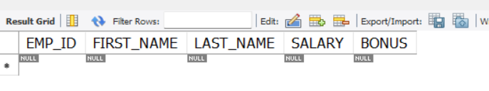

Data Definition Language (DDL)
In this section, we will cover the following DDL commands and create a new schema and a new table in MySQL:
CREATEALTERDROP
By the end of this section, you will have a good understanding of how to use these commands to create, alter and drop your database structure effectively.
CREATE Command
The CREATE command is used to create new objects in sql such as schemas, tables, indexes and constraints. Instead of using both mouse and keyboard to create schema, this time we will use only keyboard and type our commands in a query script_ to create a new schema and table. Let's open MySQL Workbench and get started 🔥!
CREATE Database
-
Open Local instance MySQL80 by single clicking the MySQL80 rectangle.

-
Click the "new SQL file" button on the left corner of your Workbench.

This will give us a query text window where we can type our SQL commands.
-
Type the commands below in your query text window:
This will create a new schema named "intro_to_sql".
Execute Buttons
Execute button
 is used to execute all the commands in the sql file.
is used to execute all the commands in the sql file.Cursor Execute button is used to to run a single command where the keyboard cursor is. The keyboard shortcut for this is CTRL + Enter on Windows or CMD+Enter (⌘+Enter) on Mac.
-
Click Execute button .
After execute a success message "CREATE DATABASE intro_to_sql" will display in the "Output" - "Action Output" section on the bottom of your Workbench.
-
Click the refresh button on the right corner of the navigator to make sure the new database is added to your SCHEMAS list.
-
Type the commands below and execute it to set "intro_to_sql" as the default schema:
The default schema will be bolded in your schema list.
Congratulations 🎉! You have successfully created a new schema "intro_to_sql". Next, let's add a new table to our new schema.
CREATE Table
In this example, we will create a table named "employee" with five columns: "EMP_ID", "FIRST_NAME", "LAST_NAME", "SALARY" and "BONUS". The "EMP_ID" column is the primary key, and other columns are required (NOT NULL).
Type and execute the commands below:
CREATE TABLE `employee` ( --(1)
`EMP_ID` INT NOT NULL AUTO_INCREMENT, --(2)
`FIRST_NAME` VARCHAR(45) NOT NULL, --(3)
`LAST_NAME` VARCHAR(45) NOT NULL,
`SALARY` INT NOT NULL, --(4)
`BONUS` INT NOT NULL,
PRIMARY KEY (`EMP_ID`) --(5)
);
- This line of code will name the new table as "employee".
- This code will make a column called "EMP_ID" that's an integer (INT), required (NOT NULL), and increases automatically(AUTO_INCREMENT).
- This code will make a column called "FIRST_NAME" that's a string with length <=45 (VARCHAR(45)) and can't be empty.
- This code will make a column called "SALARY" that's an integer and can't be empty.
- This code will set "EMP_ID" as primary key.
Refresh schema list in the navigator, and you will see the employee table under "intro_to_sql" schema. And a success message is shown in the "Output" section.

Good Job 🎉! You just created a new table using DDL CREATE command.
Note
In SQL, by default, most commands are not case sensitive. This means that you can use uppercase or lowercase letters interchangeably when writing commands or queries, and SQL will treat them the same way.
For example, the following two queries are equivalent:
and However, uppercase letters are commonly used for keywords, such as CREATE, ALTER, DROP, SELECT, INSERT, etc. In this documentation, we will follow this rule and use uppercase letters for all keywords.ALTER Command
The ALTER command is used to modify the structure of existing database objects. It can add, delete, or modify columns and constraints in a table. In the example below, we will use ALTER to add columns to "employee" table.
Type and execute the commands below:
You've added an "AGE" column and a "BIRTH_DATE" column to your employee table.
DROP Command
The DROP command is used to remove existing database objects such as databases, tables, indexes, and constraints.
Type and execute the command below:
In this example, we deleted both "AGE" column and "BIRTH_DATE" column in "employee" table.

Now let's try some dangerous commands.
-
Type and execute the command below:
CREATE DATABASE test_drop; USE test_drop; CREATE TABLE `test` ( `id` INT NOT NULL AUTO_INCREMENT, `description` VARCHAR(45) NOT NULL, PRIMARY KEY (`id`) );This would create a new schema called "test_drop" for us to test DROP command, set it as default, and create a table called "test" in this schema.
-
Then type and execute the command below:
Your "test_drop" schema including the "test" table is permanently deleted without any warning message* when you execute the above command.
Danger
DROP DATABASE command deletes the database and all its tables and data. It will delete the specified object permanently, so use it with caution.
Conclusion
We hope this section has been helpful with your learning journey on the following:
- Using CREATE to create a new database objects such as schema, table and column
- Using USE to set a schema to default
- Using ALTER to modify the database objects
- Using DROP to delete database objects
In the next section, we will go through SQL DML commands, which are used to manipulate data in the database. With these commands, you can retrieve, insert, update, and delete data from your database.
Let's continue learning! 👉 DML
Author: Alice